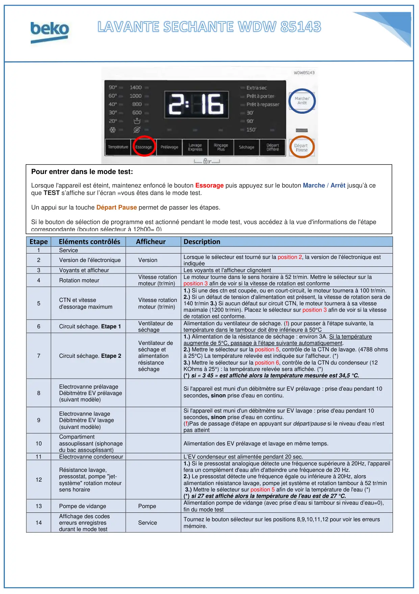
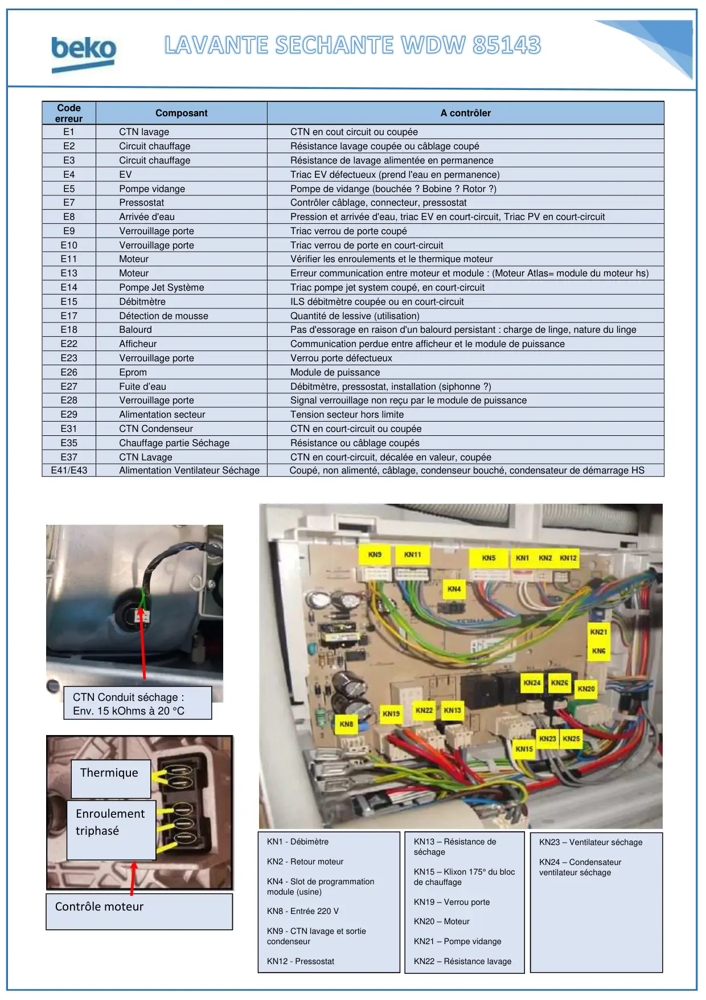

ProgTest LS WDW85143

EtapeEléments contrôlésAfficheurDescription1Service2Version de l'électroniqueVersionLorsque le sélecteur est tourné sur la position 2, la version de l'électronique estindiquée3Voyants et afficheurLes voyants et l'afficheur clignotent4Rotation moteurVitesse rotationmoteur (tr/min)Le moteur tourne dans le sens horaire à 52 tr/min. Mettre le sélecteur sur laposition 3 afin de voir si la vitesse de rotation est conforme5CTN et vitessed'essorage maximumVitesse rotationmoteur (tr/min)1.) Si une des ctn est coupée, ou en court-circuit, le moteur tournera à 100 tr/min.2.) Si un défaut de tension d'alimentation est présent, la vitesse de rotation sera de140 tr/min 3.) Si aucun défaut sur circuit CTN, le moteur tournera à sa vitessemaximale (1200 tr/min). Placez le sélecteur sur position 3 afin de voir si la vitessede rotation est conforme.6Circuit séchage. Etape 1Ventilateur deséchageAlimentation du ventilateur de séchage. (!) pour passer à l'étape suivante, latempérature dans le tambour doit être inférieure à 50°C7Circuit séchage. Etape 2Ventilateur deséchage etalimentationrésistanceséchage1.) Alimentation de la résistance de séchage : environ 3A. Si la températureaugmente de 5°C, passage à l'étape suivante automatiquement.2.) Mettre le sélecteur sur la position 5, contrôle de la CTN de lavage. (4788 ohmsà 25°C) La température relevée est indiquée sur l'afficheur. (*)3.) Mettre le sélecteur sur la position 6, contrôle de la CTN du condenseur (12KOhms à 25°) : la température relevée sera affichée. (*)(*) si « 3 45 » est affiché alors la température mesurée est 34,5 °C.8Electrovanne prélavageDébitmètre EV prélavage(suivant modèle)Si l'appareil est muni d'un débitmètre sur EV prélavage : prise d'eau pendant 10secondes, sinon prise d'eau en continu.9Electrovanne lavageDébitmètre EV lavage(suivant modèle)Si l'appareil est muni d'un débitmètre sur EV lavage : prise d'eau pendant 10secondes, sinon prise d'eau en continu.(!)Pas de passage d'étape en appuyant sur départ/pause si le niveau d'eau n'estpas atteint10Compartimentassouplissant (siphonagedu bac assouplissant)Alimentation des EV prélavage et lavage en même temps.11Electrovanne condenseurL’EV condenseur est alimentée pendant 20 sec.12Résistance lavage,pressostat, pompe "jet-système" rotation moteursens horaire1.) Si le pressostat analogique détecte une fréquence supérieure à 20Hz, l'appareilfera un complément d'eau afin d'atteindre une fréquence de 20 Hz.2.) Le pressostat détecte une fréquence égale ou inférieure à 20Hz, alorsalimentation résistance lavage, pompe jet système et rotation tambour à 52 tr/min3.) Mettre le sélecteur sur position 5 afin de voir la température de l'eau (*)(*) si 27 est affiché alors la température de l'eau est de 27 °C.13Pompe de vidangePompeAlimentation pompe de vidange (avec prise d’eau si tambour si niveau d’eau=0),fin du mode test14Affichage des codeserreurs enregistresdurant le mode testServiceTournez le bouton sélecteur sur les positions 8,9,10,11,12 pour voir les erreursmémoire.Pour entrer dans le mode test:Lorsque l'appareil est éteint, maintenez enfoncé le bouton Essorage puis appuyez sur le bouton Marche / Arrêt jusqu’à ceque TEST s’affiche sur l’écran =vous êtes dans le mode test.Un appui sur la touche Départ Pause permet de passer les étapes.Si le bouton de sélection de programme est actionné pendant le mode test, vous accédez à la vue d'informations de l'étapecorrespondante (bouton sélecteur à 12h00= 0)
1 / 2
KN1 - DébimètreKN2 - Retour moteurKN4 - Slot de programmationmodule (usine)KN8 - Entrée 220 VKN9 - CTN lavage et sortiecondenseurKN12 - PressostatKN13 – Résistance deséchageKN15 – Klixon 175° du blocde chauffageKN19 – Verrou porteKN20 – MoteurKN21 – Pompe vidangeKN22 – Résistance lavageKN23 – Ventilateur séchageKN24 – Condensateurventilateur séchageContrôle moteurCodeerreurComposantA contrôlerE1CTN lavageCTN en cout circuit ou coupéeE2Circuit chauffageRésistance lavage coupée ou câblage coupéE3Circuit chauffageRésistance de lavage alimentée en permanenceE4EVTriac EV défectueux (prend l'eau en permanence)E5Pompe vidangePompe de vidange (bouchée ? Bobine ? Rotor ?)E7PressostatContrôler câblage, connecteur, pressostatE8Arrivée d'eauPression et arrivée d'eau, triac EV en court-circuit, Triac PV en court-circuitE9Verrouillage porteTriac verrou de porte coupéE10Verrouillage porteTriac verrou de porte en court-circuitE11MoteurVérifier les enroulements et le thermique moteurE13MoteurErreur communication entre moteur et module : (Moteur Atlas= module du moteur hs)E14Pompe Jet SystèmeTriac pompe jet system coupé, en court-circuitE15DébitmètreILS débitmètre coupée ou en court-circuitE17Détection de mousseQuantité de lessive (utilisation)E18BalourdPas d'essorage en raison d'un balourd persistant : charge de linge, nature du lingeE22AfficheurCommunication perdue entre afficheur et le module de puissanceE23Verrouillage porteVerrou porte défectueuxE26EpromModule de puissanceE27Fuite d’eauDébitmètre, pressostat, installation (siphonne ?)E28Verrouillage porteSignal verrouillage non reçu par le module de puissanceE29Alimentation secteurTension secteur hors limiteE31CTN CondenseurCTN en court-circuit ou coupéeE35Chauffage partie SéchageRésistance ou câblage coupésE37CTN LavageCTN en court-circuit, décalée en valeur, coupéeE41/E43Alimentation Ventilateur SéchageCoupé, non alimenté, câblage, condenseur bouché, condensateur de démarrage HSCTN Conduit séchage :Env. 15 kOhms à 20 °CThermiqueEnroulementtriphasé
2 / 2